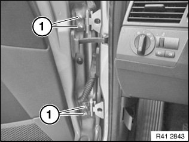
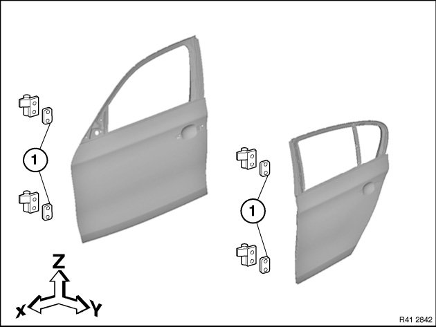
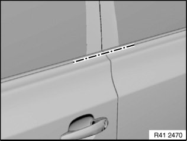
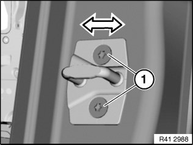

Front Door: Adjustments
41 5. ... Adjust door

IMPORTANT:
- Do not damage adjoining body parts.
- Minor corrections (realignment work) are permitted if the existing adjustment options are not sufficient.

NOTE: Observe gap dimensions.
The door must be provided with all attachment parts for correct adjustment.
Adjust screwed body parts from rear to front.
The following illustrations are schematic representations and are to be applied to the relevant vehicle type.

Slacken lock striker, remove if necessary.
Slacken nuts (1) until door can still just be moved.
Tightening torque 41 51 2AZ.
Tightening torque 41 52 2AZ.

Adjust rear door in transition to front door (Y) by fitting shims.
Installation:
To preset new part, carry over number of shims from damaged door.
Adjust door longitudinally (X) and vertically (Z).

Check that adjoining body parts are flush in terms of height and correct if necessary.
NOTE:
- Vertical adjustment of door must not be influenced by lock striker.
- When the door is closed, the lock striker must not touch or scrape against the door lock. Look out for scratches.

Slacken screws (1) until lock striker can still just be moved.
Move lock striker sideways in order to adjust transition between door and rear side panel.
Tightening torque 51 21 2AZ.
NOTE: When the door is closed, the lock striker must not touch or scrape against the door lock. Look out for scratches.

After installation:
- Tighten all screws and nuts to specified torque.
- Touch up unpainted surfaces in the appropriate colour.
- If necessary, adjust front door.